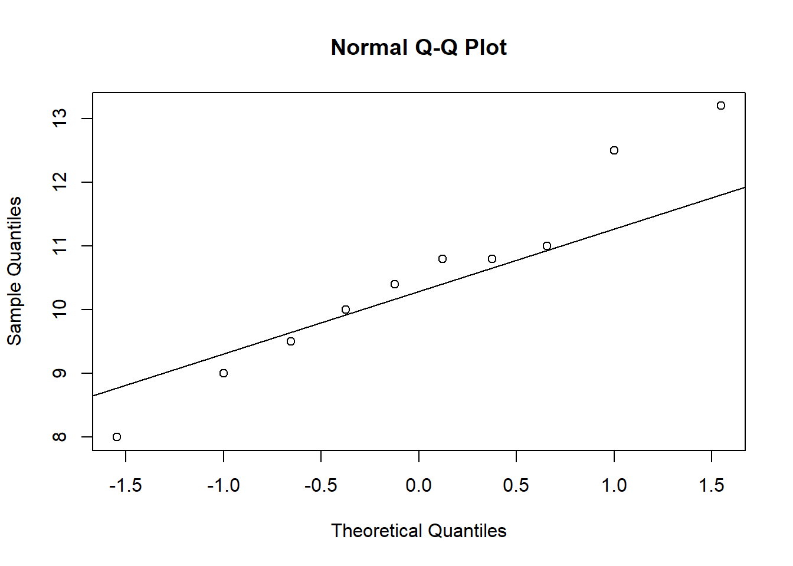
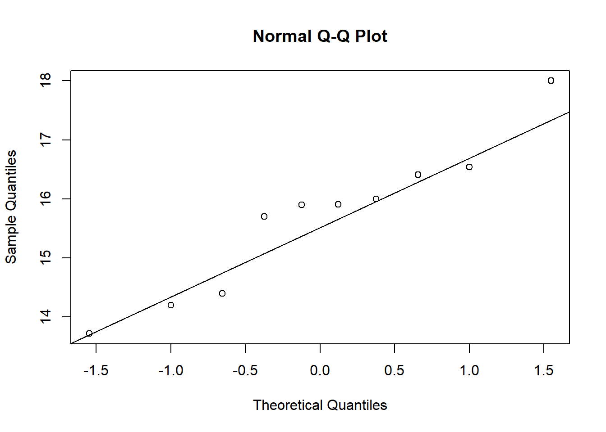

Nesta aula, serão abordados os tipos de análise estatística em função da quantidade e da natureza das variáveis independentes (níveis dos fatores), bem como do número de tratamentos ou grupos experimentais a serem comparados.
Teste T
O testet é um dos testes estatísticos mais utilizados para comparar médias entre grupos. Ele é especialmente útil quando queremos verificar se duas amostras apresentam diferenças estatisticamente significativas. Como todo teste estatístico, o teste t também tem como produto a medida do valor de p (calculado a probabilidade da diferença encontrada (entre as médias) terem sido por acaso).
No RStudio, esse teste pode ser realizado de forma simples usando a função t.test().
Trabalhando um conjunto de dados e aplicando o “Teste t”.
Teste t para amostras independentes
O teste t para amostras independentes avalia se há evidência estatística suficiente para afirmar que as médias dos dois grupos são diferentes. Esse teste assume que os dois grupos são independentes entre si, isto é, os valores de um grupo não influenciam os do outro.
Exemplo: Experimento com o objetivo de avaliar o efeito do micronutriente magnésio (Mg), adicionado na solução do solo cultivado com plantas, no manejo de uma doença. O experimento foi conduzido em delineamento inteiramente casualizado com 10 repetições. Um dos tratamentos é o controle “control” (testemunha, sem a aplicação do micronutriente. O segundo é Magnésio “Mg2”, onde houve aplicação do mineral. Em cada uma das repetições foi obtido um valor médio do comprimento (mm) de lesões.
O conjunto de dados utilizado neste exemplo está disponível em uma planilha online no Google Sheets.Para acessar esses dados diretamente no R, foi utilizada a biblioteca gsheet, que permite importar planilhas do Google Sheets de forma prática.
Code
#Primeiramente, carregou-se a biblioteca com o comando:library(gsheet)#Em seguida, os dados foram lidos a partir do link da planilha online usando a função gsheet2tbl, que converte a planilha em um data frame no R:dat_mg <-gsheet2tbl("https://docs.google.com/spreadsheets/d/1bq2N19DcZdtax2fQW9OHSGMR0X2__Z9T/edit?gid=983033137#gid=983033137")
Com os dados carregados, foi feita uma visualização gráfica utilizando a biblioteca ggplot2. O gráfico gerado é do tipo jitter plot, que ajuda a visualizar a dispersão dos dados ao longo dos diferentes tratamentos (trat) em relação à variável de interesse (comp):
data2 |>ggplot(aes(trat, mean_com)) +geom_col(width =0.5, fill ="#99E89D") +geom_errorbar(aes(ymin = mean_com - ci,ymax = mean_com + ci),width =0.1) +ylim(0,20) +labs(x ="Tratamentos", y ="Tamanho médio das lesões (mm)")
Ao utilizar ?t.test, o R exibe a documentação dessa função, explicando seus argumentos, funcionamento e exemplos de uso. Esse teste pode ser empregado posteriormente para analisar se as diferenças observadas entre os tratamentos são estatisticamente significativas.
Code
# ?t.test #mostra como esse teste funciona
Após importar e visualizar os dados sobre tratamentos com magnésio, procedeu-se com a transformação do formato dos dados e aplicação de um teste estatístico para comparação entre os grupos.
Transformação dos dados (pivotagem)
Inicialmente, os dados foram reorganizados com a função pivot_wider() da biblioteca tidyr, com o objetivo de converter a estrutura do dataset do formato longo (onde os valores de tratamento estão em uma única coluna) para o formato largo (em que cada tratamento ocupa uma coluna distinta com seus respectivos valores):
Code
library(dplyr)library(tidyr) # <- Adicione isso para usar pivot_wider()dat_mg2 <- dat_mg |>pivot_wider (names_from = trat, values_from = comp) |>#Transformando o formato dos dados: O que era uma coluna "longa" vai virar várias colunas "largas".## Pivot (passar de longo para largo) dplyr::select(-rep)
Com isso, a coluna trat, que antes indicava os diferentes grupos de tratamento (por exemplo, “control” e “Mg2”), é desmembrada em colunas separadas, facilitando a aplicação de testes estatísticos comparativos. A coluna rep, que representa as repetições experimentais, foi removida por não ser necessária nessa etapa da análise.
Utilizou-se a função t.test() para comparar as médias dos dois tratamentos: control (sem magnésio) e Mg2 (tratamento com magnésio):
Welch Two Sample t-test
data: control and Mg2
t = 8.1549, df = 17.354, p-value = 2.423e-07
alternative hypothesis: true difference in means is not equal to 0
95 percent confidence interval:
3.825607 6.490393
sample estimates:
mean of x mean of y
15.678 10.520
Interpretação do valor de p
O resultado do teste inclui o valor de p (p-value), que representa a probabilidade de observar uma diferença entre as médias tão grande quanto (ou maior que) a encontrada nos dados, assumindo que a hipótese nula seja verdadeira.
Hipótese nula (H₀): as médias dos dois grupos são iguais.
Hipótese alternativa (H₁): as médias dos grupos são diferentes
Se o valor de p for muito pequeno (geralmente menor que 0,05), rejeita-se a hipótese nula. Isso significa que a diferença observada entre os grupos é estatisticamente significativa, e aceita-se a hipótese alternativa: os grupos são diferentes entre si.
Portanto, o teste t aplicado permite concluir se a aplicação de magnésio (Mg2) gerou um efeito significativo em relação ao controle.
Análise e Interpretação do Teste t com Apoio de Pacotes no R
Após a realização do teste t para comparar dois tratamentos experimentais aplicados em plantas (por exemplo, controle e suplementação com magnésio), foram utilizadas ferramentas adicionais no R para interpretar, organizar e visualizar os resultados de forma mais clara e acessível.
O pacote report foi utilizado para gerar uma interpretação automática e em linguagem natural dos resultados do teste t. Esse pacote é útil para descrever os principais resultados estatísticos em formato descritivo, ideal para relatórios e publicações.
Code
library(report) #Pacote para explicar os resultados das análisesreport(t_results)
Effect sizes were labelled following Cohen's (1988) recommendations.
The Welch Two Sample t-test testing the difference between control and Mg2
(mean of x = 15.68, mean of y = 10.52) suggests that the effect is positive,
statistically significant, and large (difference = 5.16, 95% CI [3.83, 6.49],
t(17.35) = 8.15, p < .001; Cohen's d = 3.65, 95% CI [2.14, 5.12])
A função report() aplica uma análise interpretativa ao objeto do teste t (t_results), exibindo informações como estatísticas do teste, valor de p, médias dos grupos comparados e interpretação textual (por exemplo, se a diferença entre os grupos é significativa ou não).
Como o objeto t_results foi gerado com os dados em formato longo, não foi necessário fazer transformações adicionais para usar a função report().
Realização do teste t com o pacote rstatix
Outra forma de realizar o teste t, especialmente útil para análises com estrutura de dados em formato longo, é com o pacote rstatix. Ele fornece uma sintaxe clara e compatível com o tidyverse.
Aqui, comp ~ trat indica que estamos comparando a variável de resposta comp entre os níveis da variável trat. O resultado é armazenado no objeto test, que pode ser usado para visualização.
Code
library(rstatix)test <-t_test(comp ~ trat, data = dat_mg)test
Para complementar a análise, foi construído um gráfico boxplot com o pacote ggpubr, que facilita a geração de gráficos estatísticos com suporte a p-values.
Code
library(ggpubr)p <-ggboxplot( dat_mg, x ="trat", y ="comp",color ="trat", palette ="jco")print(p)
Em seguida, o valor de p obtido no teste t foi adicionado manualmente ao gráfico com stat_pvalue_manual(), indicando se há diferença estatística entre os grupos:
O parâmetro y.position = 18 define a altura em que o valor de p será exibido no gráfico. A função ylim(0, 20) ajusta os limites do eixo y para acomodar melhor os dados e o texto.
ggsave("plot2.png", bg ="white") #Por fim, o gráfico foi salvo em um arquivo de imagem.
Verificação de Suposições para o Teste t: Normalidade e Homogeneidade de Variâncias
Ao aplicar o teste t para comparação de médias entre dois grupos independentes, é fundamental verificar se os dados atendem às suposições básicas desse teste paramétrico. Essas suposições incluem:
Distribuição normal dos dados em cada grupo
Homogeneidade das variâncias entre os grupos
O não atendimento dessas condições pode invalidar os resultados do teste ou exigir ajustes na sua aplicação.
Teste de Normalidade: shapiro.test()
A normalidade dos dados foi avaliada para cada grupo separadamente com o teste de Shapiro-Wilk, por meio da função shapiro.test():
Esse teste verifica se os dados seguem uma distribuição normal. A hipótese nula (H₀) é de que os dados são normalmente distribuídos.
Se o valor de p > 0,05, não se rejeita H₀ → os dados são considerados normalmente distribuídos;
Se o valor de p < 0,05, rejeita-se H₀ → os dados não seguem distribuição normal.
Além do teste, foram gerados histogramas para visualização da distribuição:
Code
#Testando a normalidade dos dadosshapiro.test(Mg2)
Shapiro-Wilk normality test
data: Mg2
W = 0.97269, p-value = 0.9146
Code
shapiro.test(control)
Shapiro-Wilk normality test
data: control
W = 0.93886, p-value = 0.5404
Code
hist(Mg2)
Code
hist(control)
Os histogramas ajudam a identificar visualmente desvios da normalidade, como assimetrias ou presença de outliers.
Análise visual da premissa de normalidade: A análise visual da premissa de normalidade é realizada por qqplot (QQ-Plot), que permite verificar se uma amostra segue uma distribuição gaussiana. Podemos simplesmente fazer usando as funções qqnorm() e qqline() para cada umas das variáveis analisadas.
Code
qqnorm (Mg2)qqline(Mg2)

Code
qqnorm(control)qqline(control)

Teste de Homogeneidade de Variâncias: var.test()
Para verificar se as variâncias dos dois grupos são semelhantes (homogêneas), utilizou-se o teste de F com a função var.test():
A hipótese nula (H₀) nesse teste é de que as variâncias dos dois grupos são iguais.
Se o valor de p > 0,05, considera-se que as variâncias são homogêneas.
Se o valor de p < 0,05, as variâncias são diferentes (heterocedásticas).
Code
#Testando a homogeneidade das variânciasvar.test(dat_mg2$Mg2, dat_mg2$control)
F test to compare two variances
data: dat_mg2$Mg2 and dat_mg2$control
F = 1.4781, num df = 9, denom df = 9, p-value = 0.5698
alternative hypothesis: true ratio of variances is not equal to 1
95 percent confidence interval:
0.3671417 5.9508644
sample estimates:
ratio of variances
1.478111
Ajuste do Teste t com base nas variâncias
Se o teste indicar variâncias homogêneas, pode-se aplicar o teste t com o argumento var.equal = TRUE (padrão).
No entanto, se for detectada heterogeneidade de variâncias, o teste t deve ser ajustado com:
Code
t_results <-t.test(control, Mg2, var.equal =FALSE)# O parâmetro var.equal = FALSE ativa a correção de Welch, que ajusta os graus de liberdade do teste, tornando-o mais robusto quando as variâncias são diferentes.
Teste T para amostras dependentes
Exemplo: Foi realizado um experimento com o objetivo de verificar o impacto do uso de uma escala na acurácia e precisão de estimativas visuais de severidade feitas por avaliadores. A hipótese testada foi de que o uso de uma escala diagramática auxilia na obtenção de estimativas mais acuradas em comparação com avaliações feitas sem esse recurso. Dez avaliadores foram selecionados aleatoriamente, e cada um realizou duas avaliações. Foram coletadas cinco variáveis relacionadas à concordância das estimativas. Como as medições foram repetidas para os mesmos avaliadores em momentos distintos, tratam-se de amostras dependentes.
Comparando Dois Grupos (teste t pareado)
Aqui, os dados são importados diretamente de uma planilha online no Google Sheets com o pacote gsheet. A planilha contém escores de acurácia medidos antes e depois de uma intervenção (avaliados como Unaided e Aided1).
Code
#importação dos dadosescala <-gsheet2tbl("https://docs.google.com/spreadsheets/d/1bq2N19DcZdtax2fQW9OHSGMR0X2__Z9T/edit?gid=1729131173#gid=1729131173")head(escala)
# A tibble: 6 × 7
assessment rater acuracia precisao vies_geral vies_sistematico vies_constante
<chr> <chr> <dbl> <dbl> <dbl> <dbl> <dbl>
1 Unaided A 0.81 0.83 0.98 1.19 0.11
2 Unaided B 0.72 0.73 0.99 0.92 -0.11
3 Unaided C 0.4 0.71 0.78 1.16 0.73
4 Unaided D 0.82 0.82 1 0.95 -0.01
5 Unaided E 0.75 0.75 0.99 1.1 0.07
6 Unaided F 0.45 0.75 0.92 0.8 0.34
Teste t pareado
Esse teste verifica se houve diferença significativa entre os dois momentos de avaliação (antes e depois da ajuda), utilizando o t_test() do pacote rstatix.
A opção paired = TRUE indica que são as mesmas pessoas avaliadas duas vezes, e var.equal = FALSE corrige o teste caso as variâncias sejam diferentes (teste de Welch).
Code
test <-t_test(acuracia ~ assessment,data = escala,paired =TRUE,var.equal =FALSE)test
unaided <- escala |>filter(assessment =="Unaided") |>pull(acuracia)aided <- escala |>filter(assessment =="Aided") |>pull(acuracia)if (length(unaided) >=2&&length(aided) >=2) {var.test(unaided, aided) # Homogeneidade de variâncias} else {message("Número de observações insuficiente em um dos grupos.")}hist(unaided)
Code
if (length(aided) >1) {hist(aided)} else {message("Não há dados suficientes para gerar o histograma de 'aided'.")} # Visualização da distribuiçãoshapiro.test(unaided) # Normalidade
Shapiro-Wilk normality test
data: unaided
W = 0.7748, p-value = 0.007155
Verifica se os dados atendem às premissas do teste t (normalidade e variâncias iguais).
Se normalidade falha → usar teste não paramétrico.
Se variâncias são diferentes, continuar com var.equal = FALSE.
Teste não paramétrico equivalente (Wilcoxon):
Um teste não paramétrico não faz nenhuma suposição sobre a distribuição da população ou tamanho da amostra. O Wilcox.test é o teste para dados não paramétricos equivalente ao teste t para dados paramétricos. o teste de Wilcoxon é usado para testar se as medianas das amostras são iguais nos casos em que a suposição de normalidade não é satisfeita ou quando não for possível checar essa suposição.
Usar Wilcoxon se os dados não forem normais. O primeiro é o equivalente ao t pareado, o segundo ao t para amostras independentes.
---format: htmleditor: visual---# **Análises estatísticas**## **Tipos de testes para análise estatística:**Nesta aula, serão abordados os tipos de análise estatística em função da quantidade e da natureza das variáveis independentes (níveis dos fatores), bem como do número de tratamentos ou grupos experimentais a serem comparados.## Teste TO *teste* *t* é um dos testes estatísticos mais utilizados para comparar médias entre grupos. Ele é especialmente útil quando queremos verificar se duas amostras apresentam diferenças estatisticamente significativas. Como todo teste estatístico, o *teste t* também tem como produto a medida do valor de *p* (calculado a probabilidade da diferença encontrada (entre as médias) terem sido por acaso).No RStudio, esse teste pode ser realizado de forma simples usando a função `t.test()`.Trabalhando um conjunto de dados e aplicando o “Teste t”.### Teste t para amostras independentesO teste t para amostras independentes avalia se há evidência estatística suficiente para afirmar que as médias dos dois grupos são diferentes. Esse teste assume que os dois grupos são independentes entre si, isto é, os valores de um grupo não influenciam os do outro.**Exemplo:** Experimento com o objetivo de avaliar o efeito do micronutriente magnésio (Mg), adicionado na solução do solo cultivado com plantas, no manejo de uma doença. O experimento foi conduzido em delineamento inteiramente casualizado com 10 repetições. Um dos tratamentos é o controle "*control*" (testemunha, sem a aplicação do micronutriente. O segundo é Magnésio "*Mg2*", onde houve aplicação do mineral. Em cada uma das repetições foi obtido um valor médio do comprimento (mm) de lesões.O conjunto de dados utilizado neste exemplo está disponível em uma planilha online no *Google Sheets*.Para acessar esses dados diretamente no R, foi utilizada a biblioteca `gsheet`, que permite importar planilhas do *Google Sheets* de forma prática.```{r}#Primeiramente, carregou-se a biblioteca com o comando:library(gsheet)#Em seguida, os dados foram lidos a partir do link da planilha online usando a função gsheet2tbl, que converte a planilha em um data frame no R:dat_mg <-gsheet2tbl("https://docs.google.com/spreadsheets/d/1bq2N19DcZdtax2fQW9OHSGMR0X2__Z9T/edit?gid=983033137#gid=983033137")```Com os dados carregados, foi feita uma visualização gráfica utilizando a biblioteca `ggplot2`. O gráfico gerado é do tipo *jitter plot*, que ajuda a visualizar a dispersão dos dados ao longo dos diferentes tratamentos (trat) em relação à variável de interesse (comp):```{r}library(ggplot2)dat_mg |>ggplot(aes(trat, comp))+geom_jitter(width=0.1)```Esse tipo de gráfico é útil para observar possíveis padrões, sobreposição de valores e variações entre os grupos experimentais.Agora, vamos iniciar a análise dos dados e extrair estatísticas que resumem o conjunto, tanto em relação à tendência central quanto à dispersão.```{r}library(dplyr)data2 <- dat_mg |>group_by(trat) |>summarise(mean_com =mean(comp),sd_comp =sd(comp),var_comp =var(comp),n =n(),se_comp = sd_comp /sqrt(n -1),ci = se_comp *qt(0,025, df =9))data2```Aqui visualizaremos os dados em gráfico de barras vertical com erro padrão.```{r}data2 |>ggplot(aes(trat, mean_com)) +geom_col(width =0.5,fill ="#99E89D") +geom_errorbar(aes(ymin = mean_com - se_comp,ymax = mean_com + se_comp),width =0.1) +ylim(0,20) +labs(x ="Tratamentos", y ="Tamanho médio das lesões (mm)")```Intervalo de confiança:```{r}data2 |>ggplot(aes(trat, mean_com)) +geom_col(width =0.5, fill ="#99E89D") +geom_errorbar(aes(ymin = mean_com - ci,ymax = mean_com + ci),width =0.1) +ylim(0,20) +labs(x ="Tratamentos", y ="Tamanho médio das lesões (mm)")```Ao utilizar `?t.test`, o R exibe a documentação dessa função, explicando seus argumentos, funcionamento e exemplos de uso. Esse teste pode ser empregado posteriormente para analisar se as diferenças observadas entre os tratamentos são estatisticamente significativas.```{r}# ?t.test #mostra como esse teste funciona```Após importar e visualizar os dados sobre tratamentos com magnésio, procedeu-se com a transformação do formato dos dados e aplicação de um teste estatístico para comparação entre os grupos.#### Transformação dos dados (pivotagem)Inicialmente, os dados foram reorganizados com a função `pivot_wider()` da biblioteca `tidyr`, com o objetivo de converter a estrutura do dataset do formato longo (onde os valores de tratamento estão em uma única coluna) para o formato largo (em que cada tratamento ocupa uma coluna distinta com seus respectivos valores):```{r}library(dplyr)library(tidyr) # <- Adicione isso para usar pivot_wider()dat_mg2 <- dat_mg |>pivot_wider (names_from = trat, values_from = comp) |>#Transformando o formato dos dados: O que era uma coluna "longa" vai virar várias colunas "largas".## Pivot (passar de longo para largo) dplyr::select(-rep)```Com isso, a coluna `trat`, que antes indicava os diferentes grupos de tratamento (por exemplo, "control" e "Mg2"), é desmembrada em colunas separadas, facilitando a aplicação de testes estatísticos comparativos. A coluna `rep`, que representa as repetições experimentais, foi removida por não ser necessária nessa etapa da análise.Utilizou-se a função `t.test()` para comparar as médias dos dois tratamentos: `control` (sem magnésio) e `Mg2` (tratamento com magnésio):```{r}attach(dat_mg2)t_results <-t.test(control, Mg2)t_results```#### Interpretação do valor de *p*O resultado do teste inclui o valor de *p* (*p-value*), que representa a probabilidade de observar uma diferença entre as médias tão grande quanto (ou maior que) a encontrada nos dados, assumindo que a hipótese nula seja verdadeira.- **Hipótese nula (H₀):** as médias dos dois grupos são iguais.**Hipótese alternativa (H₁):** as médias dos grupos são diferentesSe o valor de *p* for muito pequeno (geralmente menor que 0,05), rejeita-se a hipótese nula. Isso significa que a diferença observada entre os grupos é estatisticamente significativa, e aceita-se a hipótese alternativa: os grupos são diferentes entre si.Portanto, o teste t aplicado permite concluir se a aplicação de magnésio (Mg2) gerou um efeito significativo em relação ao controle.#### Análise e Interpretação do Teste t com Apoio de Pacotes no RApós a realização do teste t para comparar dois tratamentos experimentais aplicados em plantas (por exemplo, controle e suplementação com magnésio), foram utilizadas ferramentas adicionais no R para interpretar, organizar e visualizar os resultados de forma mais clara e acessível.O pacote `report` foi utilizado para gerar uma interpretação automática e em linguagem natural dos resultados do teste t. Esse pacote é útil para descrever os principais resultados estatísticos em formato descritivo, ideal para relatórios e publicações.```{r}library(report) #Pacote para explicar os resultados das análisesreport(t_results)```A função `report()` aplica uma análise interpretativa ao objeto do teste t (`t_results`), exibindo informações como estatísticas do teste, valor de *p*, médias dos grupos comparados e interpretação textual (por exemplo, se a diferença entre os grupos é significativa ou não).Como o objeto `t_results` foi gerado com os dados em formato longo, **não foi necessário fazer transformações adicionais** para usar a função `report()`.#### Realização do teste t com o pacote `rstatix`Outra forma de realizar o teste t, especialmente útil para análises com estrutura de dados em formato longo, é com o pacote `rstatix`. Ele fornece uma sintaxe clara e compatível com o `tidyverse`.Aqui, `comp ~ trat` indica que estamos comparando a variável de resposta `comp` entre os níveis da variável `trat`. O resultado é armazenado no objeto `test`, que pode ser usado para visualização.```{r}library(rstatix)test <-t_test(comp ~ trat, data = dat_mg)test```#### Visualização gráfica com valor de *p* usando `ggpubr`Para complementar a análise, foi construído um gráfico boxplot com o pacote `ggpubr`, que facilita a geração de gráficos estatísticos com suporte a *p-values*.```{r}library(ggpubr)p <-ggboxplot( dat_mg, x ="trat", y ="comp",color ="trat", palette ="jco")print(p)```Em seguida, o valor de *p* obtido no teste t foi adicionado manualmente ao gráfico com `stat_pvalue_manual()`, indicando se há diferença estatística entre os grupos:O parâmetro `y.position = 18` define a altura em que o valor de *p* será exibido no gráfico. A função `ylim(0, 20)` ajusta os limites do eixo y para acomodar melhor os dados e o texto.```{r}#add p-value manuallyp +stat_pvalue_manual(test, label ="p",y.position =18)+ylim(0,20)+labs(x ="Tratamento",y ="Comprimento (mm)")ggsave("plot2.png", bg ="white") #Por fim, o gráfico foi salvo em um arquivo de imagem.```#### Verificação de Suposições para o Teste t: Normalidade e Homogeneidade de VariânciasAo aplicar o *teste t* para comparação de médias entre dois grupos independentes, é fundamental verificar se os dados atendem às suposições básicas desse teste paramétrico. Essas suposições incluem:- **Distribuição normal dos dados em cada grupo**- **Homogeneidade das variâncias entre os grupos**O não atendimento dessas condições pode invalidar os resultados do teste ou exigir ajustes na sua aplicação.#### Teste de Normalidade: `shapiro.test()`A normalidade dos dados foi avaliada para cada grupo separadamente com o **teste de Shapiro-Wilk**, por meio da função `shapiro.test()`:Esse teste verifica se os dados seguem uma **distribuição normal**. A hipótese nula (H₀) é de que os dados são normalmente distribuídos.- Se o **valor de p \> 0,05**, não se rejeita H₀ → os dados são considerados normalmente distribuídos;- Se o **valor de p \< 0,05**, rejeita-se H₀ → os dados não seguem distribuição normal.Além do teste, foram gerados histogramas para visualização da distribuição:```{r}#Testando a normalidade dos dadosshapiro.test(Mg2)shapiro.test(control)hist(Mg2)hist(control)```Os histogramas ajudam a identificar visualmente desvios da normalidade, como assimetrias ou presença de outliers.**Análise visual da premissa de normalidade**: A análise visual da premissa de normalidade é realizada por qqplot (QQ-Plot), que permite verificar se uma amostra segue uma distribuição gaussiana. Podemos simplesmente fazer usando as funções qqnorm() e qqline() para cada umas das variáveis analisadas.```{r}qqnorm (Mg2)qqline(Mg2)``````{r}qqnorm(control)qqline(control)```#### Teste de Homogeneidade de Variâncias: `var.test()`Para verificar se as variâncias dos dois grupos são semelhantes (homogêneas), utilizou-se o **teste de F** com a função `var.test()`:A hipótese nula (H₀) nesse teste é de que as variâncias dos dois grupos são iguais.- Se o **valor de p \> 0,05**, considera-se que as variâncias são homogêneas.- Se o **valor de p \< 0,05**, as variâncias são diferentes (heterocedásticas).```{r}#Testando a homogeneidade das variânciasvar.test(dat_mg2$Mg2, dat_mg2$control) ```#### Ajuste do Teste t com base nas variânciasSe o teste indicar variâncias homogêneas, pode-se aplicar o teste t com o argumento `var.equal = TRUE` (padrão).\No entanto, se for detectada heterogeneidade de variâncias, o teste t deve ser ajustado com:```{r}t_results <-t.test(control, Mg2, var.equal =FALSE)# O parâmetro var.equal = FALSE ativa a correção de Welch, que ajusta os graus de liberdade do teste, tornando-o mais robusto quando as variâncias são diferentes.```### Teste T para amostras dependentes**Exemplo:** Foi realizado um experimento com o objetivo de verificar o impacto do uso de uma escala na acurácia e precisão de estimativas visuais de severidade feitas por avaliadores. A hipótese testada foi de que o uso de uma escala diagramática auxilia na obtenção de estimativas mais acuradas em comparação com avaliações feitas sem esse recurso. Dez avaliadores foram selecionados aleatoriamente, e cada um realizou duas avaliações. Foram coletadas cinco variáveis relacionadas à concordância das estimativas. Como as medições foram repetidas para os mesmos avaliadores em momentos distintos, tratam-se de amostras dependentes.#### Comparando Dois Grupos (teste t pareado)Aqui, os dados são importados diretamente de uma planilha online no Google Sheets com o pacote `gsheet`. A planilha contém escores de acurácia medidos antes e depois de uma intervenção (avaliados como `Unaided` e `Aided1`).```{r}#importação dos dadosescala <-gsheet2tbl("https://docs.google.com/spreadsheets/d/1bq2N19DcZdtax2fQW9OHSGMR0X2__Z9T/edit?gid=1729131173#gid=1729131173")head(escala)```### Teste t pareadoEsse teste verifica se houve diferença significativa entre os dois momentos de avaliação (antes e depois da ajuda), utilizando o `t_test()` do pacote `rstatix`.A opção `paired = TRUE` indica que são as mesmas pessoas avaliadas duas vezes, e `var.equal = FALSE` corrige o teste caso as variâncias sejam diferentes (teste de Welch).```{r}test <-t_test(acuracia ~ assessment,data = escala,paired =TRUE,var.equal =FALSE)test```**Visualização:** É gerado um boxplot para visualizar a distribuição das acurácias por tipo de avaliação (`Unaided` vs `Aided1`).```{r}escala |>ggplot(aes(assessment, acuracia))+geom_boxplot()```#### Testando suposições```{r}unaided <- escala |>filter(assessment =="Unaided") |>pull(acuracia)aided <- escala |>filter(assessment =="Aided") |>pull(acuracia)if (length(unaided) >=2&&length(aided) >=2) {var.test(unaided, aided) # Homogeneidade de variâncias} else {message("Número de observações insuficiente em um dos grupos.")}hist(unaided)if (length(aided) >1) {hist(aided)} else {message("Não há dados suficientes para gerar o histograma de 'aided'.")} # Visualização da distribuiçãoshapiro.test(unaided) # Normalidade```Verifica se os dados atendem às premissas do teste t (normalidade e variâncias iguais).- Se **normalidade** falha → usar teste **não paramétrico**.- Se **variâncias são diferentes**, continuar com `var.equal = FALSE`.### **Teste não paramétrico equivalente (Wilcoxon):**Um teste não paramétrico não faz nenhuma suposição sobre a distribuição da população ou tamanho da amostra. O `Wilcox.test` é o teste para dados não paramétricos equivalente ao *teste t* para dados paramétricos. o teste de `Wilcoxon` é usado para testar se as medianas das amostras são iguais nos casos em que a suposição de normalidade não é satisfeita ou quando não for possível checar essa suposição.Usar Wilcoxon se os dados não forem normais. O primeiro é o equivalente ao t pareado, o segundo ao t para amostras independentes.```{r}# wilcox.test(unaided, aided) # Wilcoxon pareado# wilcox.test(unaided, aided, paired = FALSE) # Mann-Whitney (independente)```